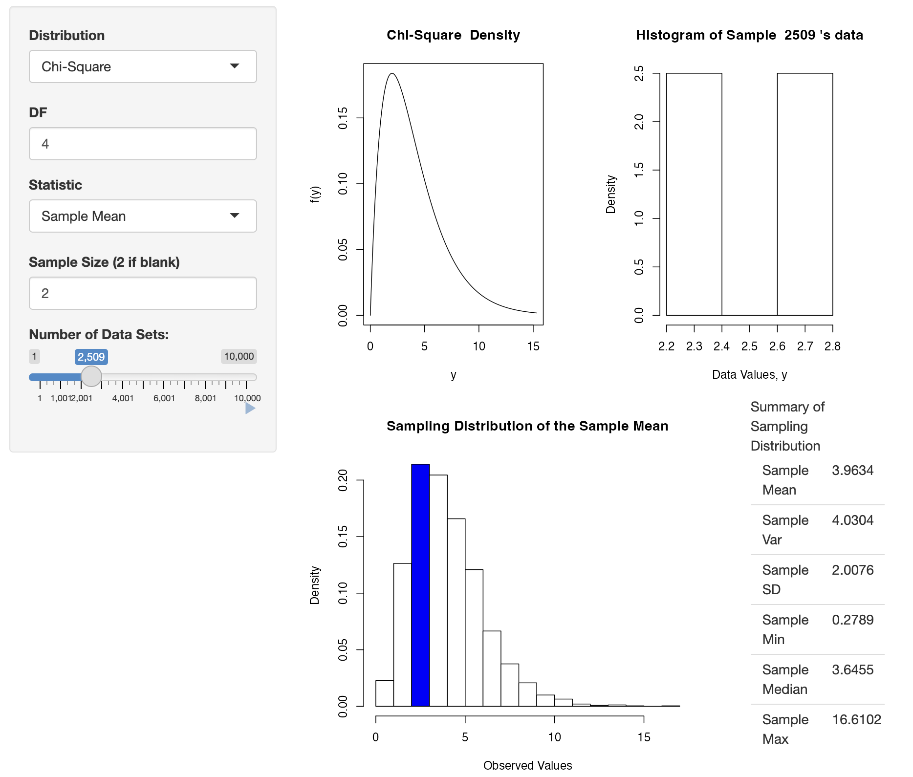
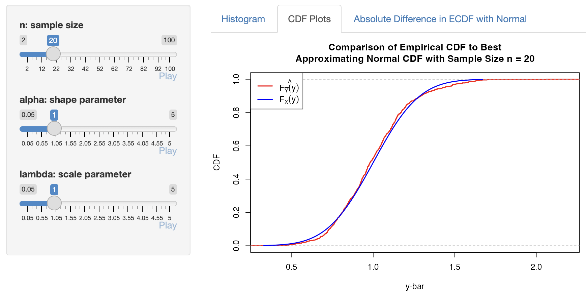
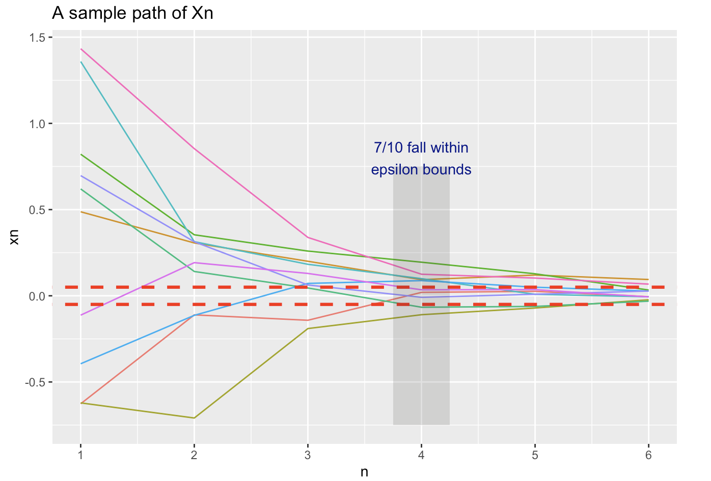
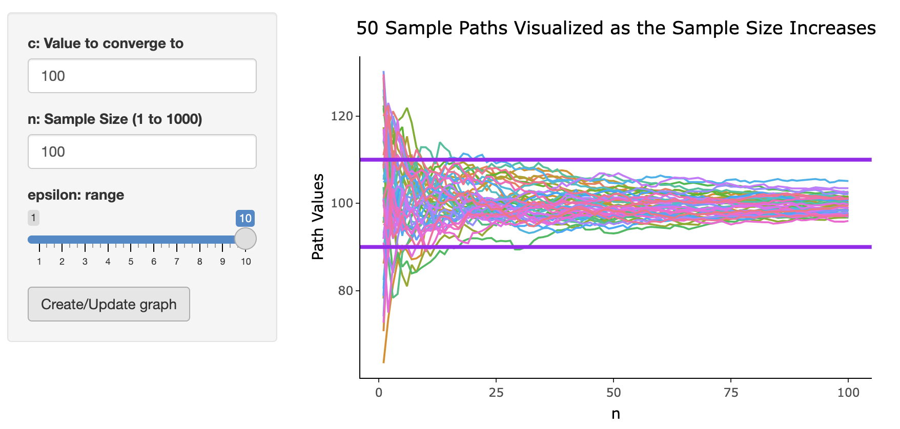

Interactive Shiny Applications provide dynamic visuals of difficult convergence topics, which allows for hands-on explorations and improved intuition behind the concepts

Teaching and Student Exploration of Convergence Concepts Using Interactive Shiny Applications
Xiaoxia Champon, Justin Post 1
xzhao17@ncsu.edu,jbpost2@ncsu.edu
1 Department of Statistics, NC State University
Motivation and Goals
Based on years of teaching the difficult topics of convergence to both intro and advanced audiences, we’ve developed interactive visuals and exploration activities to help students understand the intuition behind these ideas and how to apply the results. Specifically:
- Two commonly taught convergence concepts: ‘in distribution’ and ‘in probability’ are demonstrated through the use of interactive Shiny Applications
- These tools allow for multiple random sequences with known features to be simulated and the behavior changes of the random sequences to be explored
- Users can take advantage of these visualizations without needing knowledge of any programming language
Exploring Convergence in Distribution
The ExploringConvergenceInDistribution.Rmd file can be downloaded and run in RStudio (see QR code link for details). This file can be used for an introductory course or a more advanced course.
- Convergence in distribution is introduced through sampling from a Binomial
- An activity allows students to try to develop a rule of thumb for when the CLT is appropriate when sampling from a Gamma distribution
- Convergence is looked at via histograms and comparisons of relevant CDFs
- A general convergence app allows students to explore sampling from 10 common distributions and observe the sampling distributions of seven different statistics
Gamma Convergence Example

Exploring Convergence in Probability
The ExploringConvergence.Rmd file can be downloaded and run in RStudio (see QR code link for details). This file is only appropriate for a more advanced course.
- Convergence in distribution is discussed in a similar way to the previous file
- Convergence in probability of the sample proportion to the true proportion is investigated using simulations of different sample sizes
- Convergence in probability is explored visually through similar graphs
- An activity to guess what a particular statistic converges to allows the students to use their prior knowledge to make an educated guess and observe convergence in probability intuitively
Visualizing Convergence in Probability
For \(Y_i\stackrel{iid}\sim N(0,1)\), convergence of \(X_n = \frac{1}{n^2}\sum_{i=1}^{n}Y_i\) is explored visually

Educated Guessing at Convergence
Using \(Y\stackrel{iid}\sim N (10,1)\), \(W = (\bar{Y})^2\) is investigated

Additional Resources
Available at Github (or use the QR code)